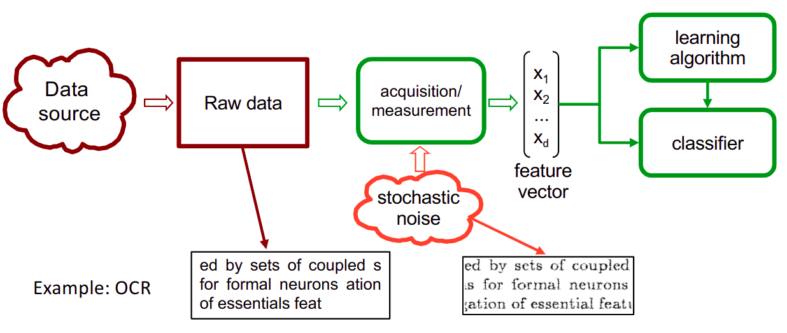
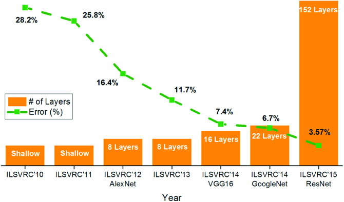
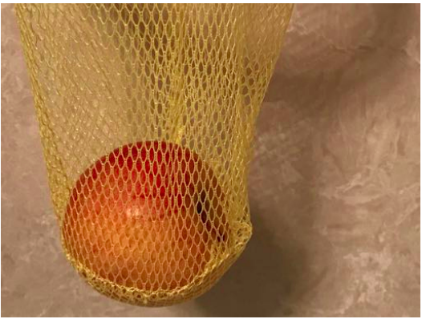
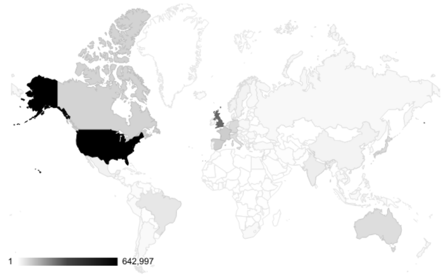
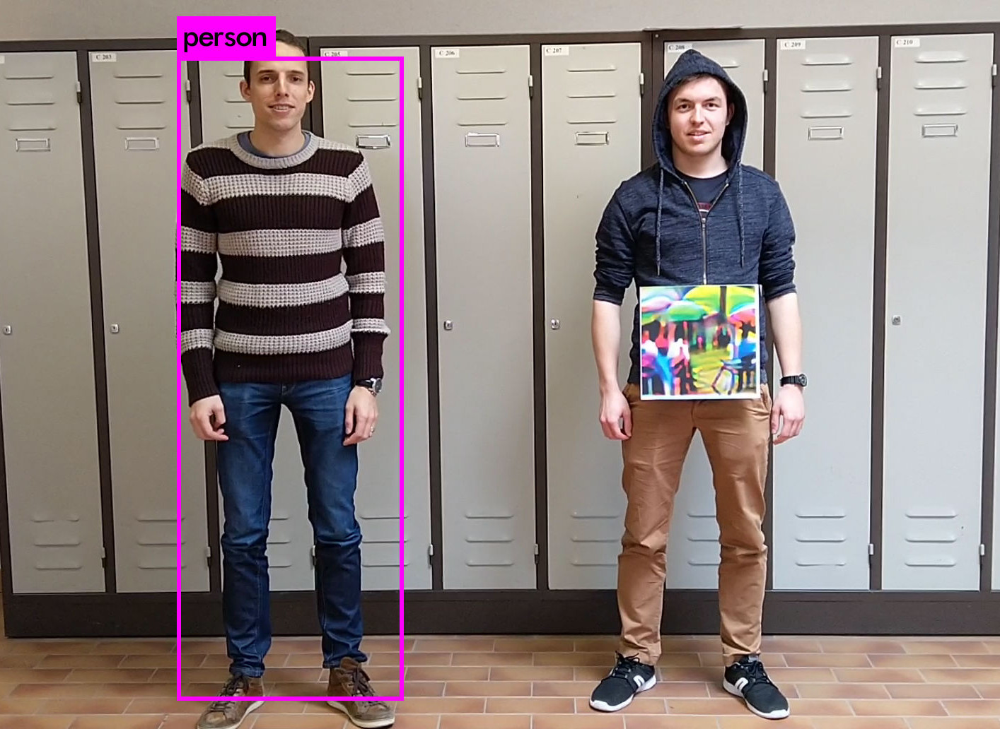
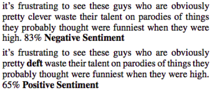
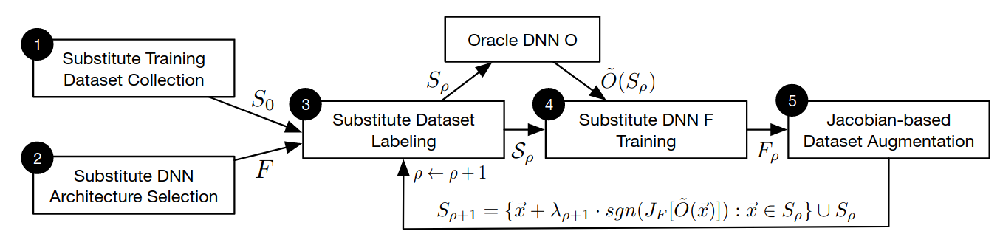
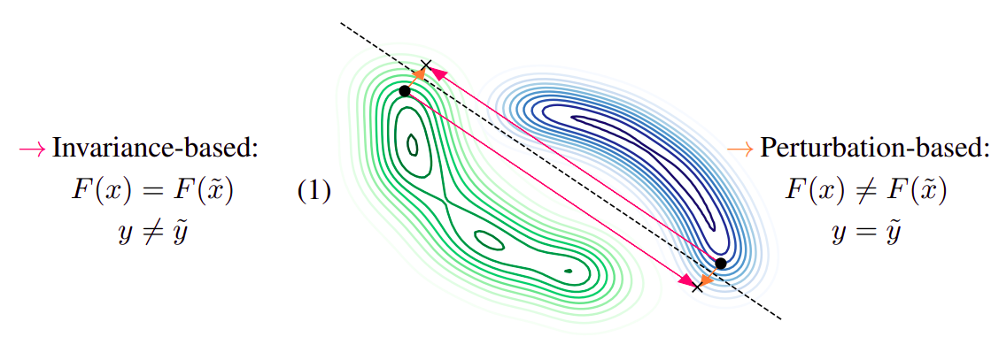

jonathan.peck@ugent.be
Jonathan Peck
Post-doc @ UGent
TWIST @ De Sterre
DAMBI @ IRC
Samples are independent and identically distributed (i.i.d.)

Impressive results in the i.i.d. setting since ~2013

Assumption of i.i.d. data can be violated when the model is deployed!

"basketball"
Data sets are often amerocentric and eurocentric

Malware detection (e.g. malicious PDFs, MalConv)
Biometric security systems
Automatic content filtering (e.g. YouTube)
Type of evasion attack
What is the smallest modification to a "natural" sample that causes the model to make a mistake?
Already well-known in "classical" ML (Lowd & Meek (2005))
Unexpected for DNNs due to the "smoothness prior" (Bengio et al. (2013)): \[ x \approx x' \implies f(x) \approx f(x') \]
Typical formalization. An input $\tilde{x}$ is adversarial for a sample $(x, y)$ and model $f$ if
Practical optimization problem: $$ \min_{\delta}~d(x, x + \delta) \mbox{ subject to } f(x) \neq f(x + \delta) $$
Can reduce accuracy of SOTA models to 0% for very small $\delta$!
How to create adversarial examples
$L_p$ threat model: $$ d(x, \tilde{x}) = \|x - \tilde{x}\|_p \leq \varepsilon $$
Patch attacks:
NLP: insertions, deletions and substitutions of tokens
Taxonomy of attacks:
Minimize $c\|\delta\| + L(x + \delta, y, f)$
Straightforward but inefficient
We wish to maximize $L(x + \delta, y, f)$.
Idea. First-order Taylor expansion: $$ L(x + \delta, y, f) \approx L(x, y, f) + \langle \nabla_xL(x, y, f), \delta \rangle. $$
Let $\delta = \varepsilon\mathrm{sign}(\nabla_xL(x, y, f))$. Then $\|\delta\|_\infty = \varepsilon$ and $$ L(x + \delta, y, f) \approx L(x, y, f) + \varepsilon\|\nabla_xL(x, y, f)\|_1. $$
$$ \tilde{x} = x + \varepsilon\mathrm{sign}(\nabla_xL(x, y, f)). $$
Very fast
Requires access to the gradients of the loss
Let $\tilde{x}_0 \gets x$ and iterate: $$ \tilde{x}_{t+1} \gets \Pi_S(\tilde{x}_t + \varepsilon\mathrm{sign}(\nabla_xL(x, y, f)) $$
Essentially multi-step FGSM with projection
Very strong, moderately fast

"speed limit" instead of "stop sign"
Simple additive norm-bounded perturbations are a toy problem!
Some work has used generative models for more sophisticated attacks, such as DeepAugment
How to cope with adversarial examples
A cryptosystem should be secure even if everything about the system, except the key, is public knowledge.
Certified defenses are preferred, but more difficult to handle
Just train on the adversarial examples as well
Uncertified but simple
Effectiveness heavily depends on attack
Standard ML: $$ \min_\theta~\mathbb{E}\left[ L(X, Y, \theta) \right]. $$
Robust ML: $$ \min_\theta~\mathbb{E}\left[ \max_\Delta L(X + \Delta, Y, \theta) \right]. $$
Practical implementation. For each minibatch,
Typically uses PGD
Can be certified sometimes (Sinha et al. (2017), Zhang et al. (2019))
PGD-based adversarial training is extremely slow
FGS-based adversarial training doesn't work (Kurakin et al. 2016)
... or does it?
FGS-based adversarial training can work if implemented carefully (Wong et al. 2020)
Two modifications of FGS:
Results are competitive with PGD but just as fast as regular training!
Certified robustness radius: $$ R = \frac{\sigma}{2}\left( \Phi^{-1}(p_A) - \Phi^{-1}(p_B) \right). $$
Randomized smoothing lowers accuracy because of noise
Simply add a denoiser!
$$\begin{aligned} g(x) &= \mathrm{argmax}_y~\Pr[f(D(x + \eta)) = y]\\ &\mbox{ where }\eta \sim \mathcal{N}(0, \sigma^2I). \end{aligned}$$ where $D$ is a denoising network
Modern defenses usually combine adversarial training with other tricks
See also Wang et al. (2023)
| Data | Threat | Standard | Robust | Best |
|---|---|---|---|---|
| CIFAR-10 | $L_2 \leq 0.5$ | 95.54% | 84.97% | 99.50% |
| $L_{\infty} \leq 8/255$ | 93.25% | 70.69% | ||
| CIFAR-100 | $L_{\infty} \leq 8/255$ | 75.22% | 42.67% | 96.08% |
| ImageNet | $L_{\infty} \leq 4/255$ | 73.76% | 47.60% | 91.10% |
Researchers have tried a lot of approaches for defense
Almost every defense proposed thus far has been broken (Tramer et al. (2020))
Any person can invent a security system so clever that they themselves can't think of how to break it.
Fundamental theoretical understanding of robustness
Lipschitz continuity: $$ d(f(x), f(x^\prime)) \leq Kd(x, x^\prime) $$
Obviously useful for robustness, so much research interest
Lipschitz constraint is very restrictive, however...
$$ \Pr[\|f(x) - f(\tilde{x})\|_2 \leq r] \geq 1 - \Theta\left(\frac{K\varepsilon^2}{r^2}\right). $$
No non-trivial concept class can be robustly learned in the distribution-free setting against an adversary who can perturb a single input bit.
Robust learning, when possible, can require exponentially more samples than standard learning
Robust accuracy can be at odds with standard accuracy
$$ y = \begin{cases} +1 & \text{wp 50%,}\\ -1 & \text{wp 50%.} \end{cases} $$
$$ x_1 = \begin{cases} +y & \text{wp }p,\\ -y & \text{wp }1-p. \end{cases} $$
$x_2, \dots, x_{d+1} \sim \mathcal{N}(\eta y, 1)$
Basically, the label $y$ is $+1$ or $-1$ uniformly at random, $x_1$ is moderately correlated with $y$ (via $p$) and $x_2, \dots, x_{d+1}$ are weakly correlated with $y$ (for large $\eta$).
Standard classification. Easy: $$ f(x) = \mathrm{sign}(\langle w, x \rangle) $$ where $$ w = \left(0, \frac{1}{d}, \dots, \frac{1}{d} \right). $$
Arbitrarily accurate for $d \to \infty$
Theorem (Tsipras et al. (2018)). Any classifier that attains at least $1-\delta$ standard accuracy has robust accuracy at most $\frac{p}{1-p}\delta$ against an $\ell_\infty$-bounded adversary with $\varepsilon \geq 2\eta$.
Corollary. For $p < 1$, 100% standard accuracy implies 0% robust accuracy!
Yang et al. (2020): classes from real-world data sets are well-separated, so robustness should be achievable
So why haven't we achieved it?
Probably some form of overfitting...
Robustness to adversarial perturbations often hurts robustness to other, more natural corruptions
This may be related to the frequency of the noise signals (Yin et al. (2019))
Labels of $\mathcal{D}_{NR}$ look wrong
Samples of $\mathcal{D}_R$ look wrong
Training on $\mathcal{D}$ yields the same results as training on $\mathcal{D}_{NR}$!
Training on $\mathcal{D}_R$ yields robust, accurate model!
Hypothesis (Ilyas et al. (2019)). Data sets contain brittle features which generalize to the test set but do not withstand adversarial attacks.
Standard models include these brittle features because they maximize test accuracy at all costs

Major open problems:
Gilmer et al. (2018): adversarial perturbations are rarely an actual security concern
More of a generalization issue than a security problem...
Adversarial robustness might not be worth it in practice
Make sure there is a realistic threat model (Gilmer et al. 2018)
Can't you compensate for adversarial examples in some other way?
Avoid creating your own defense
Stick to tried-and-true published methods
See RobustBench
Adversarial training is the basic building block of most modern defenses
Often in conjunction with clever data augmentation techniques (Rebuffi et al. 2021)
Don't forget to use early stopping against robust overfitting!
Incorporating artificial data created by generative models also helps (Gowal et al. 2021)
Unlabeled data can also be used with self-training (Carmon et al. 2019)
Use AutoAttack to evaluate robustness
Make sure to use randomized and plus versions
Unfortunately not (yet) possible for patch attacks...
Think about adaptive attacks (Tramèr et al. 2020)
Watch out for gradient masking
Iterative attacks $\geq$ single-step attacks
Higher attack budget $\implies$ better success rate
Unbounded attacks should be 100% successful
Random sampling should not perform better than adversarial attacks